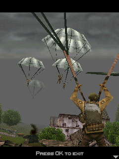

I’d read that Melange couldn’t play Brothers in Arms, which made me curious about getting it running. We were working with the English BIA240 edition of Earned in Blood and its original 240×320 framebuffer.BA00BA01
Original parachutes.
Startup needed more than a menu around an interpreter. The original module exercised double arithmetic, square root, string and file services, then spent enough instructions on native resource decompression to need a larger execution budget. The scene itself stayed the game’s job.BA02

The retained BIA240 host acceptance captured the original parachute sequence. This is the game’s native framebuffer on a desktop test host, not a phone recording.
Open the image for the full original view.
BA90Between two ticks.
The native key handler kept pending press bits and release bits for the next timer update. A quick touchscreen down-and-up could arrive before that update consumed either. Having delivered both events was not enough to make the press useful.BA03
We kept a press down through one naturally due callback, then released it. Rapid taps retained separate pairs of edges, and backgrounding cleared held and queued input immediately. We didn’t need to pump an extra timer on a touch and change the game’s pace to make the input visible.BA03BA04
The retained acceptance run moved the original first-mission scene, paused and resumed, and wrote a native profile that a fresh runtime could accept. The short-tap repair connected the glass to a game that consumed input on its own schedule.BA05
One stubborn sound.
Later public-import preparation found a smaller compatibility edge in the sound pack. One CMID contained two control markers the converter did not support. Its conversion input was adapted while keeping the original sound container and native audio events intact.BA06
We checked what the sound adaptation actually produced: all 47 decoded PCM streams and all three MIDI files matched. The reconstructed import then repeated the original first-mission and save checks.BA07BA08
In the newer shell, we kept the separate original center OK code and four-way pad. Duke had taught us to verify simultaneous input, but it hadn’t supplied an automatic control scheme for every BREW game. Brothers in Arms still needed its own keys understood.BA09
About these records
The Melange motivation is a recollection of something the owner read, not a fresh compatibility claim. This is specifically BIA240, not an interchangeable BIA176 edition. Historical captures and acceptance are host original-runtime evidence; framework layout and import checks keep their separate scopes. The source does not supply an early multi-build crash saga or a later phone verdict for the packaged APK. No bridge or original game was run while writing.
The receipts
Selected report lines, investigation notes and owner recollections. Open a receipt for its source and scope.
BA00 / Reading that Melange could not play itOwner recollection
Source: Archive-building conversation / owner-supplied recollection
The owner describes what prompted his interest. This is not an independent compatibility test of any current Melange version.
brothers in arms was a i read melange couldnt play it lol
BA01 / The exact supported game and editionCheckpoint investigation notes
Source: Brothers_in_Arms_Bridge_v0.1.3_PRIVATE_CHECKPOINT.zip / Brothers_in_Arms_Bridge_v0.1.3_PRIVATE/README_FIRST.txt · selected lines 1–2, 9–11
BROTHERS IN ARMS BRIDGE v0.1.3 — PRIVATE NORMALIZED BUILD Brothers in Arms: Earned in Blood · BREW · BIA240 English · 240x320 [... selected excerpt ...] The owner does not run scripts or edit metadata. For Public play, the player supplies the exact original BIA240.rar. Both source archives remain in this private checkpoint; BIA176 is not the supported edition for this build.
BA02 / Original startup needed native arithmetic and decompression budgetCheckpoint investigation notes
Source: Brothers_in_Arms_Bridge_v0.1.3_PRIVATE_CHECKPOINT.zip / Brothers_in_Arms_Bridge_v0.1.3_PRIVATE/TECHNICAL_HANDOFF.txt · selected lines 39–45, 47–48
Earlier original-execution implementation notes (v0.1.0): Original BIA240 class 0x0104251E. Module entry at 0x00100000; constructor supplies handler 0x00120A80. Source module remains unchanged. Added double arithmetic selectors (add/sub/mul/div), unary sqrt, strchr, title-exercised sound-info and volume callbacks, original file services, audio MIME detection/handler resolution. Creation/start/loading callbacks require larger instruction budgets for original native resource decompression; no extra timers or scene synthesis were added. [... selected excerpt ...] Runtime lineage: supplied Katamari v0.1.0 from clean BioShock v0.2.0; Genesis v0.6.1 MainActivity was inspected directly for presentation. New app com.wakka.bia,
BA90 / Historical image / Brothers in Arms parachute openingHistorical host capture
Source: Brothers_in_Arms_Bridge_v0.1.3_PRIVATE/evidence/acceptance/06_original_3d_parachutes.png
Reviewed original game image; no personal interface or image metadata. This is a retained desktop original-runtime capture, not a new phone screenshot.
Unchanged historical game framebuffer. Source member: Brothers_in_Arms_Bridge_v0.1.3_PRIVATE/evidence/acceptance/06_original_3d_parachutes.png Image SHA-256: 482eade14717dd9786f2a51dc29dd389cce598364888d7ee89f8fa88a79ca8bc The retained BIA240 host acceptance captured the original parachute sequence. This is the game’s native framebuffer on a desktop test host, not a phone recording.
BA03 / Touch down and release must survive the native timerCheckpoint investigation notes
Source: Brothers_in_Arms_Bridge_v0.1.3_PRIVATE_CHECKPOINT.zip / Brothers_in_Arms_Bridge_v0.1.3_PRIVATE/TECHNICAL_HANDOFF.txt · selected lines 51–56
Original native event semantics: EVT_KEY_PRESS 0x101 sets pending down bits at applet+0x498; EVT_KEY_RELEASE 0x102 sets release bits at applet+0x49C. The native timer consumes these. Production input queue prevents short taps from disappearing by retaining down through one naturally due native callback. Every edge is retained; releaseAll releases immediately during background/focus loss. No Katamari-specific modal memory offsets or control descriptions are used for game routing.
BA04 / Short taps, repeated taps and background release regressionCheckpoint investigation notes
Source: Brothers_in_Arms_Bridge_v0.1.3_PRIVATE_CHECKPOINT.zip / Brothers_in_Arms_Bridge_v0.1.3_PRIVATE/evidence/controller-checks.log · selected lines 11–19
PASS original applet boot PASS short tap down retained until original callback PASS input never pumps guest timer PASS release follows original due callback PASS second tap queued behind first pending release PASS rapid taps retain three distinct native pairs PASS background immediately releases holds and queued edges PASS background input ignored PASS original ARM remains live
BA05 / First mission, movement, pause and save reloadCheckpoint investigation notes
Source: Brothers_in_Arms_Bridge_v0.1.3_PRIVATE_CHECKPOINT.zip / Brothers_in_Arms_Bridge_v0.1.3_PRIVATE/evidence/acceptance.log · selected lines 1, 24, 30–38
PASS original module boots unmodified [... selected excerpt ...] PASS held Up changes original rendered scene [... selected excerpt ...] PASS native pause and resume render distinct screens PASS original suspend and resume events PASS original ARM operation remains live PASS native save serialized 30016 bytes PASS fresh original runtime accepts saved profile PASS native save bytes survive fresh runtime reload PASS native 240x320 framebuffer PASS no unsupported interface on exercised path PASS total=37 steps=2656542689 callbacks=545 mediaPlays=2 audioPayloads=2
BA06 / One sound needed conversion-marker adaptationCheckpoint investigation notes
Source: Brothers_in_Arms_Bridge_v0.1.3_PRIVATE_CHECKPOINT.zip / Brothers_in_Arms_Bridge_v0.1.3_PRIVATE/README_FIRST.txt · selected lines 29–33
The original sounds pack is expanded using verified container-header transformations and the existing ZIP/LZMA and legacy CMID decoder. One CMID has two unsupported non-audio control markers; its converter input is adapted and one PCM filename is aliased. The original sounds.bar and native audio events remain intact. All 47 decoded PCM sample streams and all three MIDI files match the existing build exactly.
BA07 / Every prepared sound matchesCheckpoint investigation notes
Source: Brothers_in_Arms_Bridge_v0.1.3_PRIVATE_CHECKPOINT.zip / Brothers_in_Arms_Bridge_v0.1.3_PRIVATE/evidence/omni/audio-sample-equality.log · selected lines 1
PASS: all 50 outputs match existing original audio; every MIDI byte and all 47 PCM sample streams identical.
BA08 / Current handoff repeats original execution on reconstructed inputsCheckpoint investigation notes
Source: Brothers_in_Arms_Bridge_v0.1.3_PRIVATE_CHECKPOINT.zip / Brothers_in_Arms_Bridge_v0.1.3_PRIVATE/VERIFICATION.txt · selected lines 10–21, 24–27
- All 50 prepared sounds reconstructed by the unchanged Omni preparation engine; all three MIDI files and all 47 PCM sample streams match the existing cache. - 178 checks through unchanged Omni 0.5.7 production classes and their named host service adapters. Tested strict inventory, no BIA-specific fallback rule, private APK intake, v0.1.2-to-v0.1.3 save identity, fresh public import of BIA240.rar, original/derived stripping, reconstruction, remove/restart/reimport, preserved real data.sav and carry-forward through a later unrelated export. - Original BIA first-mission/gameplay/save/reload acceptance uses the newly reconstructed public-import assets. Current result is in original-reconstructed.log. - The complete shared UI source, BiaControls and MainActivity are byte-identical to v0.1.2. The original interpreter and 11 native runtime payloads are unchanged. All 50 desktop audio sample streams are unchanged; one cache filename is aliased. [... selected excerpt ...] Historical shared-kit geometry/framework evidence remains labeled by its version. No handset/ART-hosted Omni acceptance occurred here. Host service adapters are explicit, and host preparation/native execution do not establish phone controls, media playback, Downloads export, thermal performance or full campaign completion.
BA09 / Four-way movement and distinct center OKCheckpoint investigation notes
Source: Brothers_in_Arms_Bridge_v0.1.3_PRIVATE_CHECKPOINT.zip / Brothers_in_Arms_Bridge_v0.1.3_PRIVATE/AGENTS.md · selected lines 8–17
BiaControls preserves the original four-way D-pad and a separate center OK code. Do not invent analog/diagonal mappings. Both normal and original keypad modes retain the D-pad. The shared 1.1.2 kit owns inline mode switching, square pad, target sizing, multi-touch, duplicate aliases and separate hardware input owners. Shared left/right actions provide L SOFT, R SOFT and CLR alongside the numeric cluster without a redundant fifth row. Android system Back calls real close/worker cleanup and returns to the launching task; CLR is separately accessible as the original pause key. A mode switch is touch-only cleanup. Do not change original SetTimer deadlines. The existing short-tap queue retains a key down through a naturally due callback; no input or report operation advances timers.